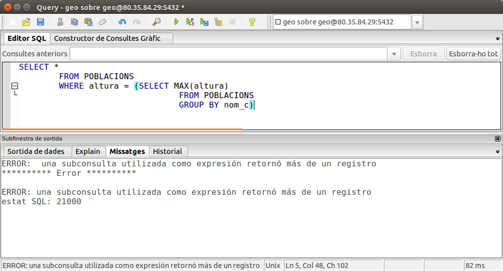

3 Subconsultes
Una subconsulta és una consulta dins d'una altra consulta. Aquesta subconsulta pot tenir tots els elements que hem vist fins ara.
El lloc on posar una subconsulta dins de la consulta principal pot ser en la clàusual WHERE o en la clàusula HAVING (formant part d'una condició) o en el FROM, i ha d'anar entre parèntesis. Fins i tot es pot posar en el mateix SELECT, és a dir, en les columnes que van després del SELECT.
-
Si va en el FROM , la subconsulta serà l'origen de les dades, i per tant s'executarà abans i proporcionarà les dades per a la consulta principal.
-
Si va en el WHERE o el HAVING formarà part d'una condició, i així podrem comparar en la consulta principal un camp amb el que torne la subconsulta, per exemple. A banda de les comparacions normals que ja hem vist en el WHERE o el HAVING, podrem posar alguns operadors i predicats especials, com veurem més avant.
-
Si va en el mateix SELECT normalment serà per a traure un resultat global que no afecta a la resta de la consulta
3.1 Sintaxi en el FROM
SELECT ...
FROM ( _Subconsulta_) AS _Nom_Subconsulta_
SELECT AVG(quants)
FROM (SELECT COUNT(*) AS quants
FROM POBLACIONS
GROUP BY nom_c) AS S ;
Com veieu, ja té un nivell de complexitat més que acceptable. Sempre s'executa primer la subconsulta i amb les dades que proporciona, s'executa la consulta principal. Pel grau de complexitat és molt recomanable anar de dins cap a fora, és a dir, pensar bé la subconsulta, fins i tot executar-la per veure si trau el que necessitem (en l'exemple veure si trau el nombre de poblacions de cadascuna de les 34 comarques), i quan estiguem segurs que funciona bé crear la consulta principal.
3.2 Sintaxi en el WHERE o el HAVING
SELECT ...
FROM Taula
WHERE camp operador ( _Subconsulta_)
Abans de veure què podem posar com a operador o com a camp o fins i tot veure uns predicats que podrem utilitzar, posarem un exemple, per clarificar les coses. Intentarem traure les comarques amb una altura superior a la mitjana. Calcular la mitjana de les altures és fàcil, i serà la subconsulta. El que farem serà comparar l'altura de cada població amb aquesta mitjana.
SELECT *
FROM POBLACIONS
WHERE altura > (SELECT AVG(altura)
FROM POBLACIONS)
No hi ha cap problema en posar dues vegades la mateixa taula. Els camps es refereixen a la taula més propera. I funciona perfectament perquè la subconsulta ens torna un únic valor, la mitjana d'altures, i en la consulta principal es compara cada altura amb aquest valor. Posteriorment veurem com solucionar el problema de que la subconsulta torne més d'un valor.
Operadors de comparació i predicats ANY, ALL, SOME
És com l'exemple de dalt, però amb qualsevol operador de comparació. Es compara el camp (o l'expressió) amb el resultat de la subconsulta. Si la subconsulta només torna un valor, no hi ha més problema, però si torna més d'un valor (més d'una fila) de moment seria incorrecte (no es pot comparar un camp amb uns quants valors). Posem un altre exemple per il·lustrar. Traure la població més alta es podria fer d'aquesta manera.
SELECT *
FROM POBLACIONS
WHERE altura = (SELECT MAX(altura)
FROM POBLACIONS)
No hi ha problema perquè la subconsulta torna un valor. Però anem a complicar-la anem a veure les poblacions més altes de cada comarca. Podríem intentar-lo d'aquesta manera:
Però ens donaria el següent error:SELECT * FROM POBLACIONS WHERE altura = (SELECT MAX(altura) FROM POBLACIONS GROUP BY nom_c)
I és que la subconsulta torna 34 valors (un per cada comarca), i d'aquesta manera no es pot comparar el valor de l'esquerra del igual amb els 34 valors de la dreta. Per a solucionar el problema de quan torna més d'un valor podem utilitzar els predicats ALL , ANY , SOME.
- Si utilitzem ALL el resultat serà cert si la comparació és certa amb TOTS els valors que torna la subconsulta.
- Si utilitzem ANY o SOME(que són sinònims) el resultat serà cert si la comparació és certa amb ALGUN valor de la subconsulta.
En el nostre exemple, segurament ens convindria ANY
Aquesta consulta no funcionarà bé del tot, ja que seleccionarà totes les poblacions que coincideixen amb alguna de les altures màximes, siguen de la seua comarca o no. Així per exemple, l'altura màxima de la comarca de la Plana Alta és la Serratella, amb 781 metres, que efectivament apareix al llistat. Però també apareix Castelló , que té una altura de 30 metres. I apareix perquè l'altura màxima de la comarca Ribera Baixa dóna la casualitat que és 30 metres (Almussafes). Ja dependrem a fer bé aquesta consulta en els exemples posteriors, però per al fet de comparar amb molts valors ens va bé.SELECT * FROM POBLACIONS WHERE altura = ANY (SELECT MAX(altura) FROM POBLACIONS GROUP BY nom_c)
L'operador IN
No serà problema que la subconsulta torne un valor o molts. La condició serà certa si el valor del camp (o de l'expressió) està entre la llista de valors que torna la subconsulta. També poden utilitzar NOT IN, i la condició serà certa quan el valor del camp no està entre la llista. Per exemple, una altra manera de traure les poblacions que no tenen institut, que la vista en les combinacions externes. En la subconsulta traem els codis de municipi de la taula INSTITUTS, i per tant són els pobles que tenen institut, i en la consulta principal volem els que no estan en aquesta llista
SELECT *
FROM POBLACIONS
WHERE cod_m NOT IN (SELECT cod_m
FROM INSTITUTS)
És segurament el més incòmode. No es compara un camp (o expressió) amb la subconsulta, sinó únicament es posa [NOT] EXISTS (subconsulta) . La condició serà certa si la subconsulta torna alguna fila , i no serà certa si no torna cap fila. Intentem fer el mateix exemple d'abans, el dels pobles sense institut. Hem d'aconseguir que la subconsulta no tinga cap fila en el cas dels que no tenen institut. De paraula ho podem dir així: volem els pobles per als quals no existeix cap fila en INSTITUTS amb el mateix codi de municipi. Ara ja es pot intuir per on van els tirs:
SELECT *
FROM POBLACIONS
WHERE NOT EXISTS (SELECT *
FROM INSTITUTS
WHERE cod_m= POBLACIONS.cod_m)
mireu com si en la subconsulta posem un camp (en l'exemple cod_m), si el camp és de la taula (o taules) de la subconsulta, es referirà a ell, per això si volem fer referència a un camp de la taula o taules de la consulta principal hem de posar el nom de la taula davant.
3.3 Sintaxi en el SELECT
SELECT ... ( _Subconsulta_)
FROM Taula
SELECT nom, altura, altura - (SELECT AVG(altura) FROM POBLACIONS)
FROM POBLACIONS
1) Traure l'altura mitjana de comarca més gran i la més menuda.
Ens fa falta prèviament l'altura mitjana de cada comarca, i això serà la subconsulta. No oblidem posar un àlias al camp de la subconsulta, per poder fer referència en la consulta principal. I no oblidem tampoc que les subconsultes en el FROM han de tenir àlies.
SELECT MAX(mitjana),MIN(mitjana)
FROM (SELECT AVG(altura) AS mitjana
FROM POBLACIONS
GROUP BY nom_c) AS S;
Podem pensar en una subconsulta on estiguen els codis de municipi de les poblacions que tenen més de 5 instituts (es consulta en la teula INSTITUTS agrupant per codi_m i comptant el número de files per a que siga major que 5).
SELECT *
FROM POBLACIONS
WHERE cod_m IN (SELECT cod_m
FROM INSTITUTS
GROUP BY cod_m
HAVING count(*) > 5)
Ens plantegem 2 subconsultes, la que trau l'altura màxima i la que trau l'altura mínima (en una única sobconsulta ens tornaria valors en 2 columnes, i estaria més complicat). Senzillament serà traure tota la informació de les poblacions que tenen una altura igual al que torna una subconsulta o al que torna l'altra.
SELECT *
FROM POBLACIONS
WHERE altura = (SELECT MAX(altura)
FROM POBLACIONS)
OR altura = (SELECT MIN(altura)
FROM POBLACIONS);
La dificultat està en que ha de ser la màxima de les altures de la seua comarca. Per tant, en la subconsulta hem de fer referència a la comarca en qüestió. Com sempre estem tractant la taula POBLACIONS, tant en la consulta com en la subconsulta, haurem de posar un nom a la de la consulta principal, per poder fer referència a ella des de la subconsulta.
SELECT *
FROM POBLACIONS T1
WHERE altura = (SELECT MAX(altura)
FROM POBLACIONS
WHERE nom_c= T1.nom_c);
5) Obtenir el nom de la comarca i la província de les comarques que tenen una altura mitjana més alta que la mitjana de totes les poblacions.
La subconsulta serà prou senzilla: la mitjana d'altures de les poblacions. En la consulta principal haurem d'agrupar per cada comarca i calcular la mitjana d'altures de les poblacions, i comparar-la amb la mitjana que ens ve de la subconsulta. Com que demana també la província, ens fa falta també la taula COMARQUES, i per tant l'haurem de reunir amb POBLACIONS; en aquesta ocasió ho hem fet posant la condicó en el WHERE.
SELECT COMARQUES.nom_c, provincia, AVG(altura)
FROM COMARQUES , POBLACIONS
WHERE COMARQUES.nom_c=POBLACIONS.nom_c
GROUP BY COMARQUES.nom_c, provincia
HAVING AVG(altura) > (SELECT AVG(altura)
FROM POBLACIONS)
Tota la informació la podem traure d'una reunió entre les taules COMARQUES i POBLACIONS (per a comptar quants pobles hi ha en cada comarca), però per a poder calcular el percentatge necessitem el número total de poblacions, que el podem calcular amb una senzilla subconsulta. El lloc més còmode és en el SELECT. La reunió l'hem feta en aquesta ocasió amb el USING.
SELECT COMARQUES.nom_c, provincia, COUNT(cod_m), COUNT (cod_m)*100.0/(SELECT
COUNT(*) FROM POBLACIONS)
FROM COMARQUES INNER JOIN POBLACIONS USING(nom_c)
GROUP BY 1,2;
 Exercicis
Exercicis
Ex_64 Traure el número màxim de factures fetes a un client
Ex_65 Traure el l'import que suposa la factura més cara i l'import que suposa la més barata (sense considerar ni descomptes ni IVA)
Ex_66 Traure el número de factures més alt que s'ha venut per venedor en cada trimestre (no traurem qui és el venedor, que seria encara més complicat). Per a poder agrupar per trimestre, ens farà falta la funció TO_CHAR(data,'Q') , que trau el número de trimestre. El pas previ és calcular el número de factures de cada venedor i en cada trimestre. Després, amb la informació anterior, voldrem calcular el màxim de cada trimestre.
Ex_67 Traure els articles més cars que la mitjana. Tragueu-los ordenats per la categoria, i després per codi d'article.
Ex_68 Modificar l'anterior per a traure els articles més cars que la mitjana de la seua categoria. Tragueu-los ordenats per la categoria
Ex_69 Traure els pobles on tenim clients però no tenim venedors. Ha de ser per mig de subconsultes (en plural). Ordeneu per codi del poble.
Ex_70 Traure els pobles on tenim més venedors que clients. Traure el codi del poble, el nom i el número de venedors. Ordena per nom del poble.
Ex_71 Traure l'import de la factura més cara de cada trimestre. La informació prèvia és la factura amb la data i l'import. A partir d'ahí haurem de calcular el màxim de l'import per a cada trimestre (no caldrà traure quina factura és).
Ex_72 Traure el nom del venedor, el número de factures que ha venut i el percentatge que suposa sobre el total. Podria ser que en el moment de calcular el percentatge, el número resultant s'haja de convertir a numèric per a que dóne bé el resultat, ja que en fer una operació amb enters, el resultat serà enter. Aleshores hauríem d'obligar a que el número tinga decimals (::NUMERIC). I la funció d'arrodonir és ROUND. Ordeneu pel nom.
Ex_73 Traure tota la informació (amb l'import) de la factura més cara. Ha de ser per mig de subconsultes. Mireu que segurament hi haurà 2 subconsultes. En la més interna calculem l'import de les factures. En l'altra calculem el màxim. I en la consulta principal, busquem la factura que coincideix amb aquest màxim.
Ex_74 (voluntari) Obtenir el venedor que ha venut més unitats de cada categoria, sense considerar en la categoria el valor nul. Aquesta consulta la podríem considerar ja com molt avançada.
Llicenciat sota la Llicència Creative Commons Reconeixement NoComercial SenseObraDerivada 2.5